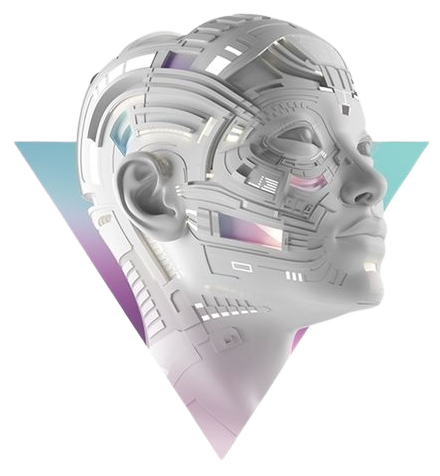

definition
Le principal avantage de la Veille Technologique est d'identifier ou de prévoir les innovations dans les business units. Les ressources de la veille technologique constituent des informations stratégiques importantes pour anticiper, développer et exploiter les inventions. La mise en place d'une observation technique permanente dans une zone définie peut répondre à plusieurs objectifs. Cela jette les bases pour identifier et comprendre les informations clés sur les concurrents et les technologies. C'est une méthode de collecte d'informations stratégiques sur les concurrents et leurs innovations.
Thème
L'intelligence artificielle
L'intelligence artificielle est « l'ensemble des théories et des techniques mises en œuvre en vue de réaliser des machines capables de simuler l'intelligence humaine ».
Ressources
Nouvelle communauté
Youtube
Micode principalement
Flux RSS
Différent site internet
Conclusion
L'intelligence artificielle occupe désormais de plus en plus de place dans les domaines de la société. Elle est devenue un des domaines les plus influencés par les innovations technologiques. Présente dans à peu près chaque secteur d'activité, elle tant à évoluer, dans certains secteur, plus rapidement que dans d'autres secteur.